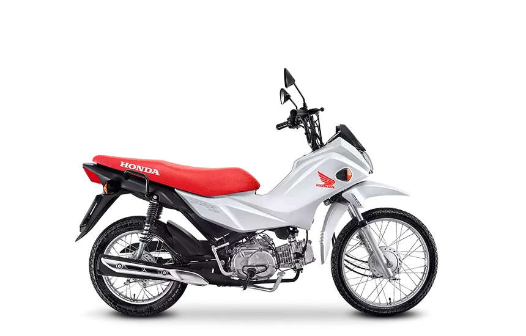
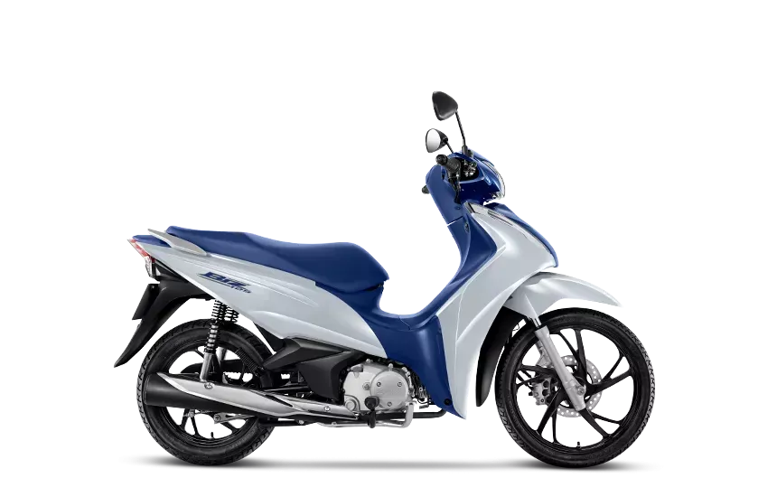
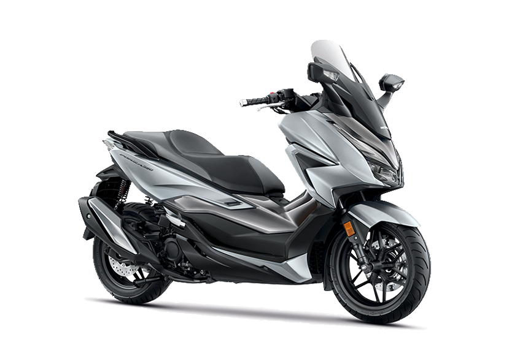
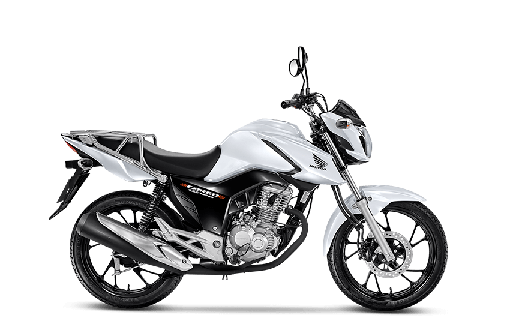
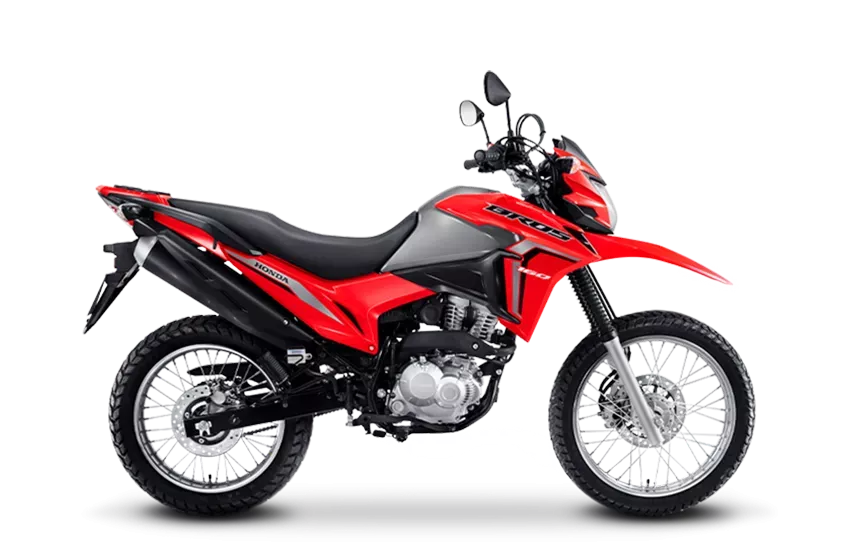
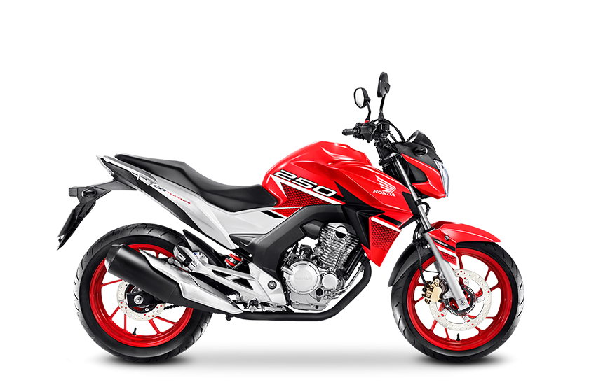
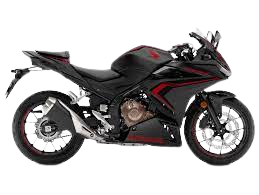
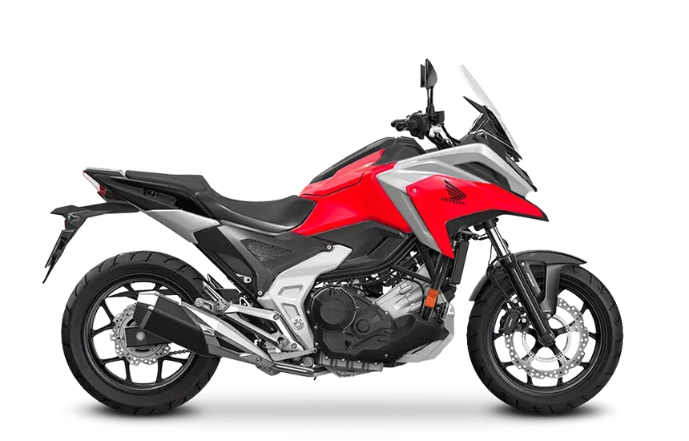

- POP-110i
- R$ 9.891,00
- A Pop 110I possui motor de 109 cm³ com potência de 7,9 CV e consegue atingir a velocidade máxima Top Speed de 95 km/h. O consumo de combustível médio é de 59,6 km/L

- biz-125
- R$ 13.473,00
- Motor: OHC, Monocilíndrico 4 tempos; Cilindrada: 124,9 CC; 9,3 : 1;Taxa de compressão: 9,3 : 1; Alimentação: Injeção eletrônica PGM-FI; Potençia Máxima: 9,2 cv a 7.500 rpm;

- forza-125
- R$ 13.473,00
- Tipo: OHC, Monocilíndrico 4 tempos, arrefecimento líquido; Cilindrada: 330cc; Potência Máxima: 21,5 kW (29,2 CV) a 7500 rpm; Torque Máximo: 31,8 N.m (3,24 kgf.m) a 5250 rpm

- CG-Cargo
- R$ 15.935,00
- Motor: 160; Número de cilindros: 1 em linha; Cilindrada em cm3: 162,7; Válvulas: 2; Taxa de compressão: 9,5:1; Potência máxima: 14,9/15,1 cv a 8.000 rpm

- NXR-160-Bros
- R$ R$ 17.191,00
- Motor: OHC, Monocilíndrico 4 tempos, arrefecido a ar; Cilindrada: 162,7 cc; Potência Máxima: 14,5 cv a 8.500 rpm (Gasolina) / 14,7 cv a 8.500 rpm (Etanol); Torque Máximo: 1,46 kgf.m a 5.500 rpm (Gasolina) / 1,60 kgf.m a 5.500 rpm (Etanol)

- CB-Twister
- R$ 18.950,00
- Motor: OHC, monocilíndrico, 4 tempos, arrefecido a ar; Cilindrada: 249,5 cc; Potência Máxima: 22,4 cv a 7.500 rpm (Gasolina) / 22,6 cv a 7.500 rpm;Torque Máximo: 2,24 kgf.m a 6.000 rpm

- CBR-500r
- R$ 27.117,00
- Motor: DOHC, bicilíndrico,4 tempos, arrefecido a líquido; Cilindrada: 471 cc; Potência máxima: 50,4 cv a 8.500 rpm; Torque máximo: 4,55 kgf.m a 7.000 rpm

- NC-750x
- R$ 59.370,00
- Motor: OHC, Dois Cilindros, 4 tempos, arrefecimento líquido; Cilindrada: 745 cc; Potência máxima: Injeção Eletrônica PGM-FI; Torque máximo: 6,94 kgf.m a 4.750 rpm